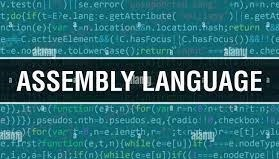

Welcome
Programming languages are one kind of computer language, and are used in computer programming to implementalgorithms.the poplular computer programming languages are :
some of the poplular programming languages are
1)HTML.
HTMl stands for 'hyper text mark up language'.
2)JAVA.
3)C LANGUAGE .
4)PROCEDURAL LANGUAGE.
5)FUNCTONAL LANGUAGE.
6)MACHINE LANGUAGE.
7)ASSEMBLY LANGUAGE.
8)LOGIC LANGUAGE.
HTMl stands for 'hyper text mark up language'.HTML (Hypertext Markup Language) is a text-based approach to describing how content contained within an HTML file is structured. This markup tells a web browser how to display text, images and other forms of multimedia on a webpage.
Java is a platform-independent, object-oriented programming language (OOP). It is not to be confused with JavaScript, a scripting language used to create dynamic web pages. Due to its reliability and ease of use, Java is one of the most popular programming languages in the world.
C is a general-purpose computer programming language. It was created in the 1970s by Dennis Ritchie, and remains very widely used and influential. By design, C's features cleanly reflect the capabilities of the targeted CPUs.
Procedural programming is a programming paradigm, derived from imperative programming, based on the concept of the procedure call. Procedures simply contain a series of computational steps to be carried out.
In computer science, functional programming is a programming paradigm where programs are constructed by applying and composing functions.
In computer programming, machine code is any low-level programming language, consisting of machine language instructions, which are used to control a computer's central processing unit.
In computer programming, assembly language, often referred to simply as Assembly and commonly abbreviated as ASM or asm, is any low-level programming language with a very strong correspondence between the instructions in the language and the architecture's machine code instructions.

Logic programming is a programming paradigm which is largely based on formal logic. Any program written in a logic programming language is a set of sentences in logical form, expressing facts and rules about some problem domain.
DONE BY SAMARTH .N.